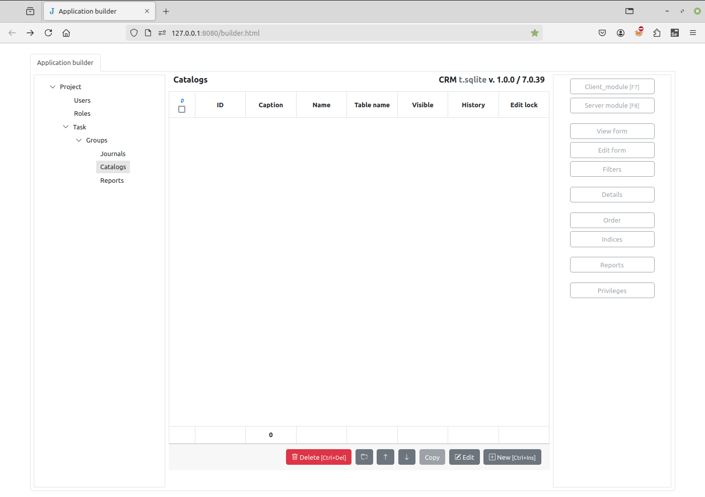
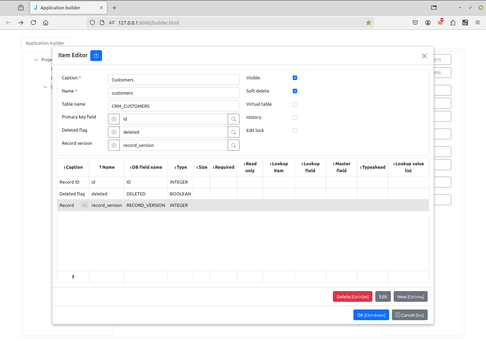
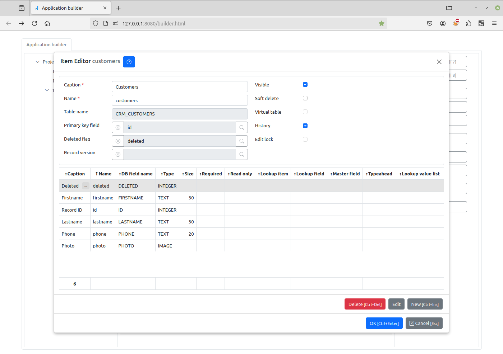
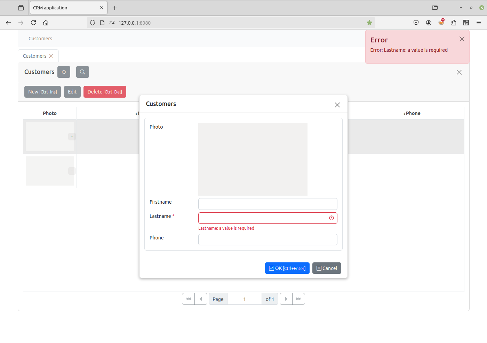

New catalog¶
Let’s go back to the Application builder page and create a “Customers” catalog. A catalog corresponds to a new table in the database.
To do this, select the “Catalogs” group in the project tree and click the New button on the bottom right corner of the page
{kind=link}
In the Item Editor dialog that appears, fill in the caption and name of the new catalog. The caption is the name that will be displayed to users, and the name is the variable name that will be used in code (Python or JS) to refer to this catalog. The name must be a valid Python identifier.
{kind=link}
Then, click the New button on the bottom right corner of the dialog to add a new field. The
Field Editor
dialog appears. Type the caption and name of the
“Firstname” field, select its type (here TEXT with 30 characters)
and click the OK button.
{kind=link}
Similarly, add the “Lastname” and “Phone” fields. When adding the “Lastname” field, check the Required attribute. This requires that the field is set when creating a new item.
{kind=link}
Now, to save the changes, click the OK button. When saving, the Application
builder created the CRM_CUSTOMERS table in the crm.sqlite database:
{kind=link}
Go to the Project page and make sure it is refreshed
127.0.0.1:8080
Then, click the New button to create a new customer. Fill in the dialog, then click the OK button:
{kind=link}